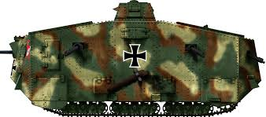

NJEMAČKA u Velikom ratu
Dok su Britanci i Francuzi bili brzi da naprave svoje prve operativne tenkove, njemačko vrhovno zapovjedništvo je sumnjalo u njihove sposobnosti. To je bilo do sredine 1917. kada su došli uspjesi koji su dokazali da se svaki dobro koordinirani napad korištenjem tenkova na pravilan način može probiti i stvoriti pustoš u pozadinskim linijama. Imali su neke razloge da ne potaknu proizvodnju tenkova. Prvo, pješačke postrojbe, poput stürmptruppen (elitnih jurišnih odreda) bile su jednostavan i mnogo jeftiniji način za postizanje ovog proboja, kao što su pokazale u mnogim prilikama tijekom 1917., a posebno tijekom proljetnih ofenziva 1918. godine.
Uspjeh je u redu i standardu...
Sturmpanzerwagen A7V – mnogi su projekti poslani odboru tijekom 1917., a samo je nekoliko odabrano. A7V je bio projekt inženjera Josepha Vollmera. Prvo je odbor morao odabrati prikladnu osnovu za pokretljivost na bojnom polju. Prirodni izbor bila je šasija Holt. Nijemci su znali da su ih Francuzi koristili kao osnovu za vlastite tenkove. Traktore Holt već je koristila austrijska vojska. Ovo je također bilo najprovjerenije dostupno gusjenično vozilo. Nakon ispitivanja J. Vollmer ne samo da je odlučio izgraditi produljenu verziju šasije, već je odabrao i dav motora za pogon cijelog vozila.
